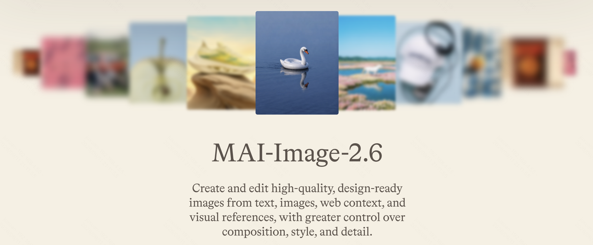
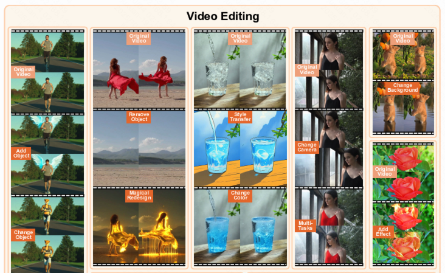
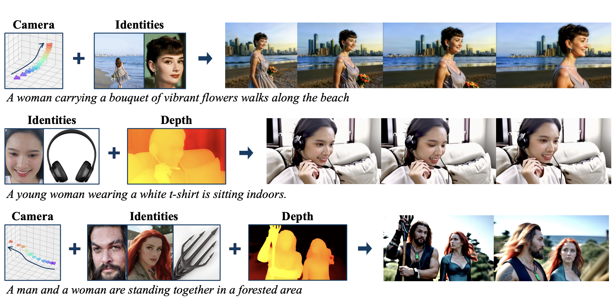
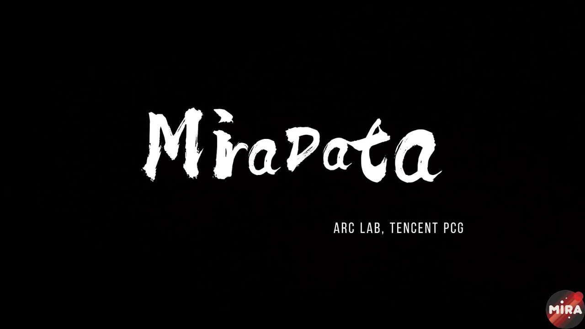
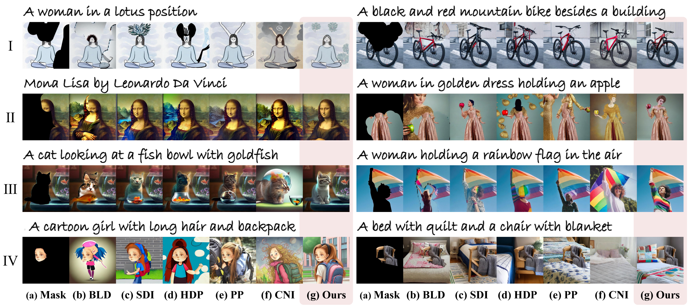
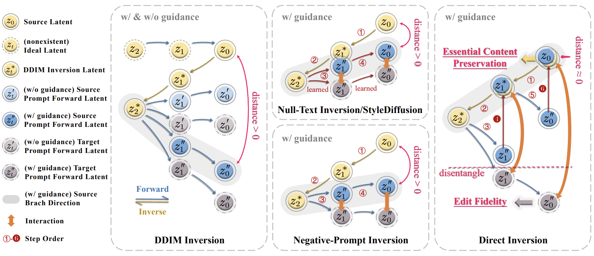
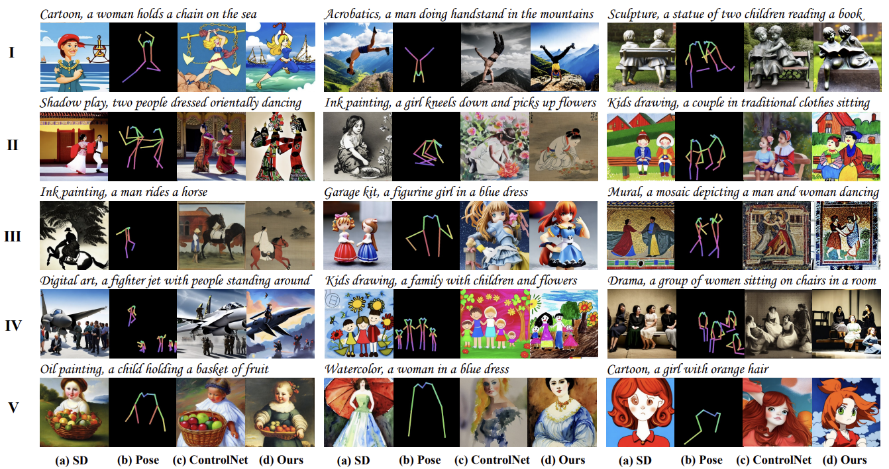
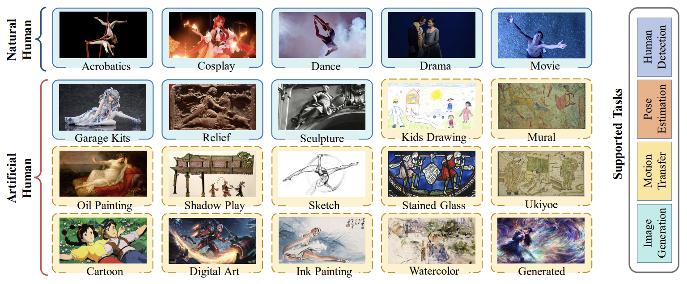

Xuan Ju
Member of Technical Staff, Microsoft AI
Ph.D. Candidate, The Chinese University of Hong Kong
Biography
Hi, I'm Xuan Ju (鞠璇). I am a final-year Ph.D. student at The Chinese University of Hong Kong. I am also a Member of Technical Staff at Microsoft AI, where I work on image generation. Before this, I majored in Computer Science and Technology (minored in Mathematics and Applied Mathematics) and got my bachelor's degree from Tongji University.
I have a broad interest in most areas of computer vision, especially in image/video generation and multi-modal models. Please do not hesitate to reach out to me via email at juxuan.27@gmail.com!
News
- [08/2026] We release MAI-Image-2.6, ranked No. 2 on the Arena text-to-image leaderboard.
- [06/2026] We release MAI-Image-2.5, ranked No. 3 for text-to-image and No. 2 for image-editing.
- [03/2026] We release MAI-Image-2, pushing MAI into the top 3 text-to-image labs.
- [01/2026] EditVerse is accepted to ICLR 2026 as an Oral Presentation!
- [10/2025] Join Microsoft AI as a Member of Technical Staff, building the MAI-Image series from the ground up.
- [09/2025] We release a unified image/video editing/generation framework, EditVerse.
- [06/2025] FullDiT is accepted to ICCV 2025, see you in Hawai'i!
- [05/2025] We are hosting the CVPR 2025 Workshop on Efficient and On-Device Generation (EDGE).
- [04/2025] Start an internship in Adobe Research with Soo Ye Kim and Zhe Lin.
- [04/2025] VideoPainter and Cobra are accepted to SIGGRAPH 2025.
Product Releases

Selected Publications
* equal contribution












Experiences


Miscellaneous
- Professional Services: Conference Reviewer for ICLR, ECCV, IJCV, CVPR, ICCV, NeurIPS, AAAI, AISTATS, ACCV, WACV, etc.; Organizer of the Workshop on Efficient and On-Device Generation (EDGE) at CVPR 2025 and CVPR 2026.
- Honors & Awards: National Scholarship (2020, 2021), Outstanding Graduate of Shanghai Province (2022), Qidi Scholarship (2022), First Prize in "Challenge Cup" Contest (2022).
- Teaching: Teaching Assistant at CUHK: CSCI 1120 (Fall 2023), CSCI 1540 (Fall 2022), CSCI 1520 (Spring 2022).